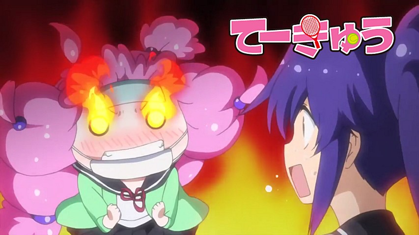

Bienvenue sur le site de la Nobluesky Fansub!
Annonces
Future GPX Cyber Formula BD 27 vostfr
Ma mère-grand, que vous avez de longs délais !
C'est pour mieux sous-titrer, mon enfant !
Cet épisode introduit le personnage le plus insupportable que je connaisse. Heureusement, il n'est pas là dans tous les épisodes....
Teekyuu Saison 6 Ep 1 à 4 vostfr
Salut!
Une jungle de gags vous attendent dans Teekyuu 6! C'est le quart d'heure de folie de la semaine^^
Comme d'habitude, vous pourrez aussi...
Future GPX Cyber Formula BD 26 vostfr
Bonjour à tous,
Une finale de Cyber Formule cette fois, et une étape de franchie dans la série!
Je vous souhaite un bon épisode....
Teekyuu Saison 5 Ep 9 à 12 vostfr

Bonjour à tous,
Voici la fin de la saison 5 de Teekyuu, mais il y a encore la 6 et la 7 à suivre!
Je vous donne donc rendez-vous bientôt pour le début de la saison 6, peut-être avec un petit délai le temps de me réorganiser...
Future GPX Cyber Formula BD 25 vostfr
Bonsoir à tous, ça faisait un bail!
Vous n'avez rien contre un scénario un brin irréaliste, et une vieille série sympa bien connue d'entre vous? Ça tombe bien, voici l'épisode 25 de Cyber Formula!
Et n'oubliez pas, 1 m/s = 3,6 km/h, donc 450 km/h = 125 m/s, c'est à dire 9,6 secondes...